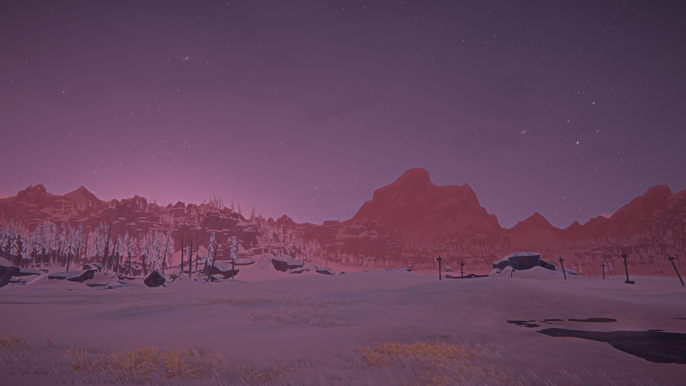

Некоторые механики
Очаг — это категория, в которой собраны места, где можно развести огонь для обогрева персонажа и/или приготовления пищи или напитков на варочной поверхности (для некоторых операций может потребоваться тара: котелок, пустая банка, сковорода). Все элементы категории, кроме костра, статичны - то есть имеют свое постоянное место расположения как в режиме истории, так и в выживании. Костер вы можете разместить самостоятельно в подходящем для этого месте.
В игре огонь может быть закрытым (его не может задуть ветер) и открытым (защищает от хищников).
Некоторые элементы категории имеют свою уникальную способность: костер (мобильность), кузнечный горн (крафт инструмента), брандспойт (не может задуть ветер).
Торговец — это выживший по имени Сазерленд, с которым можно связаться через приёмник для обмена товарами. В его ассортименте представлены как обычные предметы, так и уникальные вещи и чертежи, недоступные на острове Великого Медведя.
Добавлен в версии 2.33. При старте нового выживания или при первой загрузке текущего выживания (созданного до обновления 2.33) торговца можно отключить или же оставить.
После смерти персонажа по любым причинам, вам на выбор будет предложено две опции: завершить игру на этом моменте и потерять текущее сохранение навсегда или обмануть смерть, получив при этом штрафы в виде болезней и потери части снаряжения.
Это опциональное изменение системы перманентной смерти, которое добавляет новый игровой опыт для тех, кто не готов так просто расстаться со своим выживанием, или для тех, кто просто хочет чего-то нового. Кроме того, эта опция позволяет избежать случайных смертей, не связанных с ошибками самого игрока. Эта опция доступна на всех уровнях сложности, кроме Страданий.
Брошенный аэродром



Форма
Заголовок

Во время любого странствия наступает момент полной ясности. Когда голубое небо или пустая дорога указывает путь к цели.

Машина Рюдигера — это устройство, разработанное Рюдигером и положившее начало всей истории.